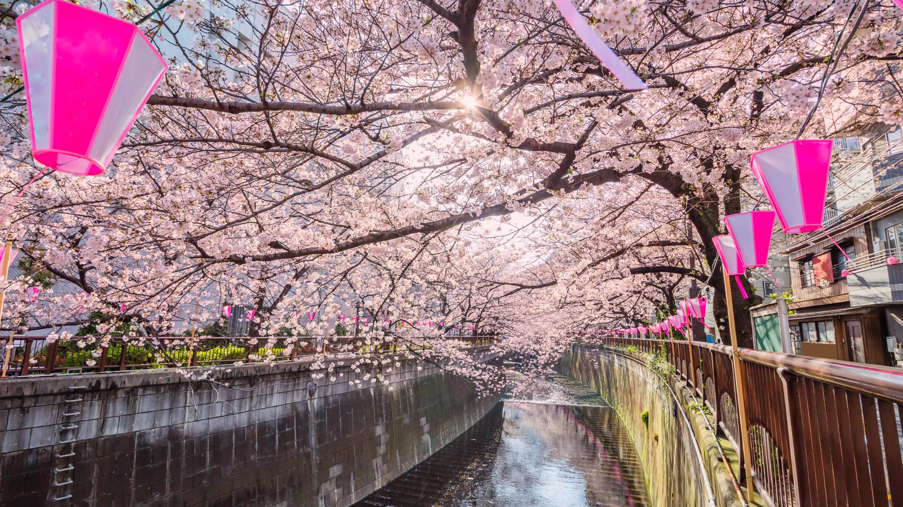

Traditions inherited from the Edo period. Continuously evolving towns and cutting-edge culture. Tokyo is a place where the two aspects dynamically merge, offering a myriad of attractions that captivate people. As experts of the constantly evolving city, let us introduce the newest and best of Tokyo to visitors from abroad.
Tokyo Travels
Why choose Tokyo?
Tokyo is a leading eco-friendly city that promotes the utilization of renewable energy and zero emission vehicles to achieve “Zero Emission Tokyo” by 2050. The city is also one of the greenest cities in the world, with natural parks totaling 80,000 hectares in addition to numerous historical gardens and city parks near downtown areas.
Tokyo is filled with an array of diverse cultures. Among modern buildings, cutting-edge fashion and animations, there are also traditional cultures and historic architecture alive in our daily lives.
Tokyo leads the world as a high-tech smart city, with advanced robotics, AI and digital technologies supporting the everyday lives of people.
Destinations
Imperial Palace & Tokyo Station

Built upon the former site of Edo Castle—once the largest castle in the world—the Imperial Palace is usually only visible from afar. However, you can sign up for a tour of the majestic inner grounds. Make sure to book in advance through the Imperial Household Agency's website. Head to the Imperial Palace's East Gardens to stroll through meticulously manicured Japanese-style gardens and see the ancient castle walls. The gardens are open to the public. Runners and cyclists circle the palace regularly; join them if you have the chance.
Roppongi & Akasaka

Roppongi is arguably Tokyo's most popular nightlife district, particularly for overseas visitors. From disco in the '70s to EDM today, Roppongi's nightclubs welcome anyone and everyone looking to drink and dance. Beyond the nightclubbing scene, Roppongi and Akasaka are often regarded as home to Tokyo's most impressive galleries and art spaces. The area houses three main museums that make up what's commonly referred to as the "Art Triangle Roppongi": The National Art Center , the Mori Art Museum , and the Suntory Museum of Art .
Shibuya & Shimokitazawa

If you're looking for trendy cafes, live music, and shopping for Japan-only goods, these popular pockets of Tokyo provide plenty to do but via different angles. While Shibuya is arguably Tokyo's main shopping hub for new and modern items, Shimokitazawa offers the chance for some retro and antique bargains. Shibuya's mega shopping centers like the iconic 109 and brand-new Hikarie stock everything being worn by the young and trendy, while also offering a number of well-curated secondhand shops and outlets. Look out for independently run stores like The Sun Goes Down to find well-priced one-off pieces.
Nakameguro

Nakameguro or "Naka-me," as it is colloquially known, strikes a distinctive balance between luxury and the bohemian. For scenery, shopping, hairstyling, dining, cafes, and art, this area is defined by its cool and sophisticated atmosphere. The charm of the river walk is amplified tenfold in spring when the cherry trees bloom. Nearly every tree along the riverside explodes with cherry blossoms, forming a tunnel of flowers over the river. The mood is definitely celebratory, but while the river is considered one of the best places in Tokyo for flower viewing, note it's also one of the most crowded.
Things to do
Gastronomy
Japanese cuisine offers an exceptionally rich and rewarding eating experience. While sushi, wagyu beef and kaiseki cuisine need little introduction, no self-respecting foodie should miss out on street food like yakitori and ramen either. Perhaps the epitome of Japanese cuisine is the kaiseki food served at ryotei (traditional Japanese restaurants). But the scope also includes numerous vegetarian varieties, river fish dishes, sushi, eel, tempura, soba, udon, takoyaki, okonomiyaki, yakiniku and more. Each region also has its own local specialties and culinary traditions in dishes unique to each area. Wherever you go and whatever you enjoy, why not accompany your meal with sake from a local brewery?
Tips
- Tokyo restaurants increasingly cater to vegetarians, vegans and those with special dietary requirements but research and planning is recommended
- Although smoking in bars and restaurants is legal and still quite common in Japan, certain venues do operate non-smoking policies
- Tipping is not common practice in Tokyo or other parts of Japan
- Most bars and izakaya apply a seating charge and serve a customary small dish prior to ordering


Anime & Manga
Geisha, samurai, sushi and sumo have long been leading symbols of Japanese culture—or at least until recently. Nowadays, anime, manga, concept cafes, J-pop and uber-inventive street fashion appear to have taken their place, particularly for millennials and children of the digital age. At the center of this new cultural identity is Tokyo—a vibrant hotbed of Japanese pop culture.
As much as anime and manga have won the hearts of people all over the world, they are extremely precious to many Japanese people too. Who knows, your recent or long-time devotion to an anime and trip to a treasured anime destination (anime tourism) might just be the foundation or spark to a lifelong relationship, whether it's friends or more!
Tips
- Akihabara is the beating heart of the manga and anime movement
- Harajuku has long been the home of Japanese street fashion
- Top Tokyo attractions include the enormous Gundam figure in Odaiba
- Shimokitazawa and Nakano have become synonymous with modern youth culture
Shopping
Shopping is a pleasure with no language barrier. Discover the different specialties of the citys unique shopping districts. While you will find the same large chain stores like Uniqlo, Muji and H&M across Tokyo, each area has its own distinct atmosphere. From the chic department stores and boutiques of Ginza, the quirky youth brands of Harajuku to the anime and electronics paradise of Akihabara, you really can buy anything in Tokyo.
Tips
- Many stores offer tax free shopping to international visitors, so take your passport with you
- Department store basements are a great place to sample new foods and pick up picnic supplies
- Look up—with real estate at a premium, a lot of great stores and cafes are above ground level
- The price on the ticket is the price—haggling and bargaining is not done, except at flea markets


Onsen & Bathhouses
Japan is known for its abundance of natural hot springs, and you can find plenty of remarkable ones in Tokyo. Hot springs, or onsen in Japanese, are a vital part of Japanese culture and have countless health benefits. In times past, the people of Edo (Tokyo) had to travel to enjoy the hot springs. But today, you can enjoy the perfect onsen experience without leaving the city.
While most people suggest Hakone or Atami in nearby prefectures for hot springs, you can take a dip without leaving the city. The water here is rich in sodium chloride and is known to help ease muscle pain, joint stiffness, cuts, burns, and colds. Facilities in the city center include Maenohara Onsen Sayano hot spring and Musashi-Koyama Onsen Shimizu-yu. Or visit some small local bathhouses near Kamata station for Kuroyu―means black hot spring, a kind of natural hot spring around Tokyo.
Tips
- No need to bring a bathing suit at traditional Japanese hot springs, neither swimsuits nor underwear are allowed
- Most onsen have a tattoo ban. If you have tattoos, ask the establishment before booking
- Feel free to bring your skincare favorites, but many onsen have amenities such as soap, shampoo, skin lotion, etc.
Wash yourself thoroughly before entering the bath. Things like shampoo, conditioner, body wash, razors, and towels are typically provided or available for a small additional fee. Once you've rinsed off, tie your hair up before entering the bath if you have long hair. Towels are not allowed in the water. Now you can relax and enjoy the Japanese hot spring water.
Plan Your Trip
Essential Information
Tokyo is nine hours ahead of GMT, with no daylight-saving time. Days can stay light until around 19:30 during the summer, but the nights draw in around 17:00 in the winter.
As you probably know, Japan's currency is the yen. Here's some useful info for getting and using yen during your time in Tokyo!
While travelers from many countries can visit Tokyo and Japan with relative ease for 90 days on a tourist visa, make sure you follow the official Japanese government visa and immigration guidelines to ensure that you can enter the country legally.
Tokyo's public transport network includes overground trains, underground trains, buses and monorails, run by different companies charging different prices. If you pick up an IC card, you can pay for your travel without breaking your stride.